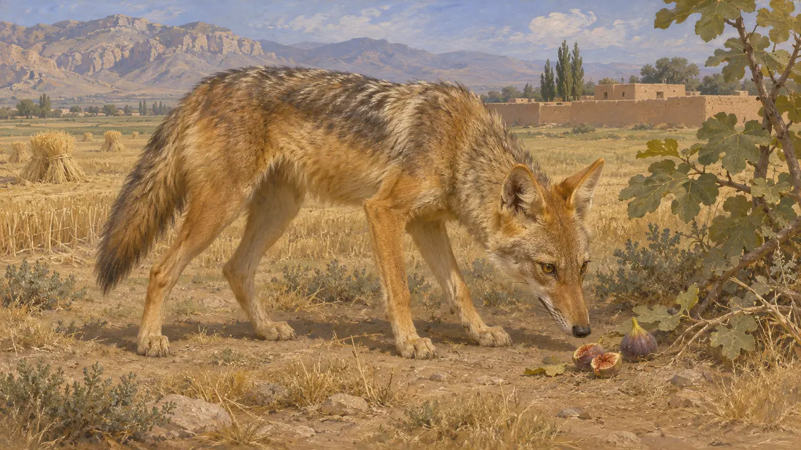
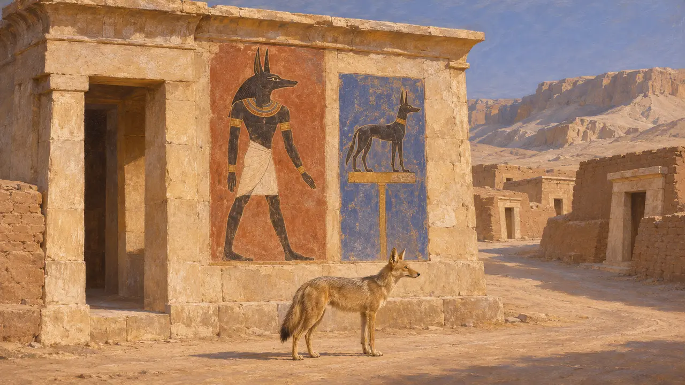
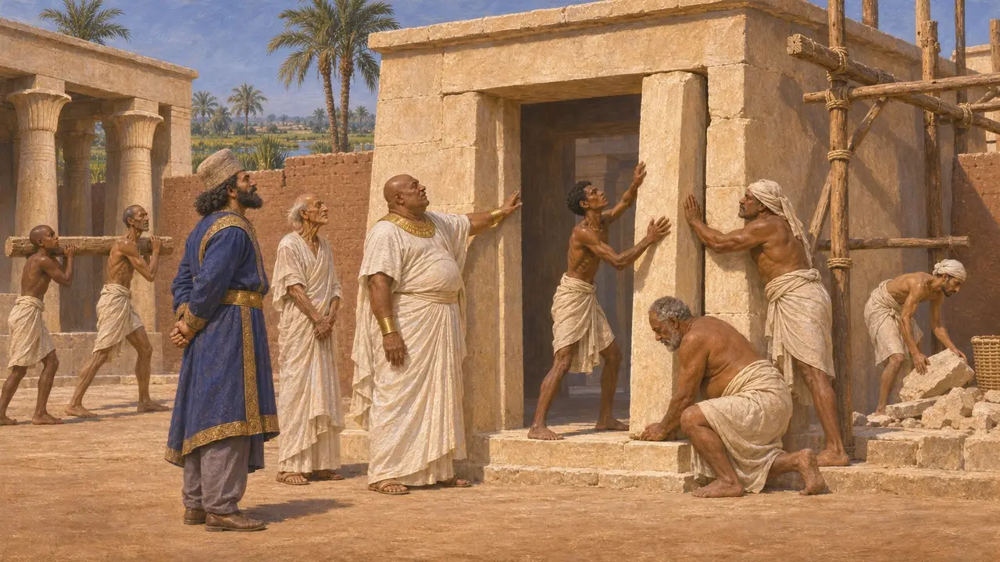
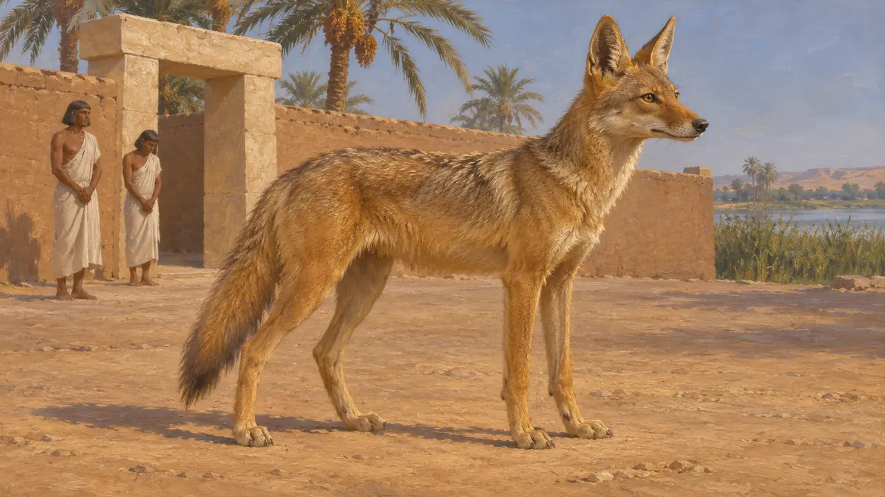
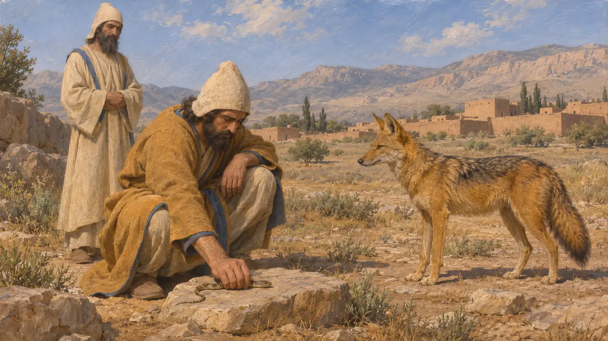

Ansiklopedi › Yaban hayatı ve hava koşulları

Altın çakal
Persis'te, Elam'da ve Mısır'da açık arazide leş arayan bir köpekgil, MÖ 6.-5. yüzyıllar
Oyunda: Bölüm 1: Kurucunun Mezarı, Bölüm 2: Mızrak Taşıyıcı, Bölüm 4: Teras, Bölüm 5: Ferman
Altın çakal (Canis aureus) Yakın Doğu'da ve kuzeydoğu Afrika'da yaşar ve büyük olasılıkla Ahameniş döneminde de yaşıyordu. Yerleşim yerlerinin ve tarlaların kenarında dolaşan küçük bir leş yiyici ve avcıdır. Mısır'da Anubis ve Wepwawet gibi köpek başlı tanrılar hayvana, oradaki Pers görevlilerinin hazır bulduğu dinî bir anlam kazandırmıştı.
Oyunda: Oyun, çakalı Pasargadai, Memfis, Parsa ve Susa bölümlerinde, kentin henüz almadığı arazide manzara öğesi olarak çizer. Hiçbir kural onu dikkate almaz; Anubis bağlantısı yalnızca Mısır'a aittir.

Açık arazinin hayvanı
TartışmalıÇakallar ovalarda, çalılıklarda ve tarım arazilerinin kenarlarında yaşayan uyumlu hayvanlardır; leş, küçük av ve meyve yerler. Persis, Elam ve Mısır'da MÖ altıncı ve beşinci yüzyıllarda bulunmaları, dönemden hiçbir kaynak bunu anlatmadığı için modern yayılım alanından yapılan bir çıkarımdır. Bu yüzden oyundaki yerleştirme belgelenmiş değil, makul bir tercihtir.
Modern range of Canis aureus; no ancient source cited

Mısır'ın çakal tanrıları
BelgelerdeMısır dini, çakal ve köpek biçimlerini ölülerle ve nekropolün yollarıyla ilişkilendirirdi. Anubis mumyalama ve mezarlık tanrısıydı; yolların açıcısı Wepwawet de köpeksi biçimde gösterilirdi. İkisi de firavunlar çağı boyunca yapılmış Mısır mezar sanatında ve tapınak kabartmalarında görülür.
Egyptian tomb art and temple reliefs

Mısır'da Pers egemenliği
BelgelerdeUdjahorresnet'in heykeli, Kambyses'e ve Dareios'a hizmet etmiş bir Mısırlı görevliyi anlatır. Yazıta göre Sais'teki Neith Tapınağı'nı arındırmış, Dareios da oradaki Yaşam Evi'nin onarılmasını buyurmuştur. Demek ki Pers kralları, mevcut Mısır tapınakları ve görevlileri aracılığıyla iş görüyordu.
Statue of Udjahorresnet

Herodotos'un Mısır hayvanları hakkında söyledikleri
Antik anlatıHerodotos Mısırlıların kutsal hayvanlara duyduğu saygıyı uzun uzun anlatır ve bazılarını öldürmenin cezalandırıldığını söyler. Anlatısı Yunanlı bir ziyaretçinin bakışıdır ve öyle okunmalıdır. Pers topraklarındaki çakal hakkında açık bir pasajı yoktur.
Herodotus 2

Perslerin hayvanlara bakışı
TartışmalıHerodotos, Magosların karıncaları, yılanları ve başka yaratıkları kendi elleriyle öldürdüğünü ve bunu erdem saydığını söyler. Tarihçiler bunun Ahameniş dinî uygulamasını ne ölçüde yansıttığını tartışır. Kaynaklar, Perslerin çakallara nasıl davrandığı konusunda kesin bir şey söylemeye izin vermez.
Herodotus 1.140
Kaynaklar
- Herodotus 2
- Herodotus 1.140
- Statue of Udjahorresnet
- P. Briant, From Cyrus to Alexander, 2002